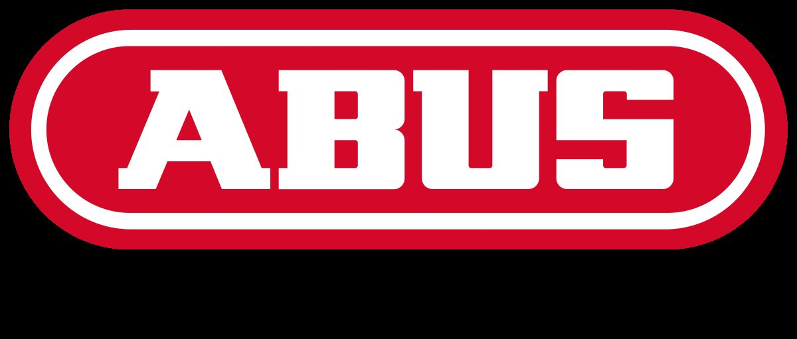
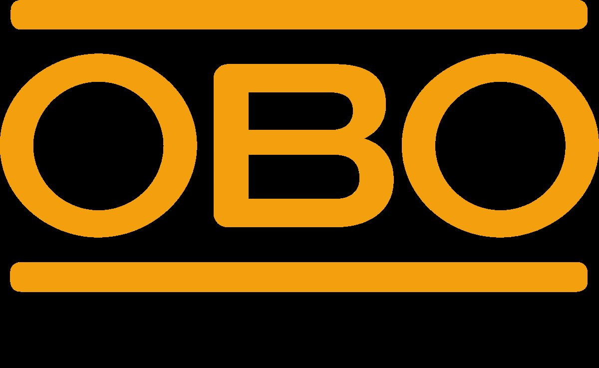

INEO-Award
Auszeichnung der Wirtschaftskammer Oberösterreich für vorbildliche Lehrlingsausbildung – 2014–2017, 2017–2020 und 2020–2023.
Start / Über Elektro Schuster
Unternehmen
Modern ausgerichtetes Familienunternehmen seit 1997: Geschichte, Team, Zahlen, Auszeichnungen und Partnerbetriebe.
Über uns
Elektro Schuster ist ein modern ausgerichtetes Familienunternehmen. Nach dem bekannten Motto „Think global, act local" schließen wir unsere Augen nicht vor neuer Technik, sondern setzen uns damit auseinander, um unseren Kunden stets zeitgerechte Elektroinstallationen bieten zu können. Dass dabei die Qualität von Material und Ausführung stimmen muss, versteht sich für uns von selbst.
Damit wir auch weiterhin am Ball bleiben, ist es uns wichtig, jungen Menschen die Möglichkeit einer qualitativ hochwertigen Ausbildung bieten zu können. Folglich freut es uns sehr, dass wir nach 2014–2017 und 2017–2020 auch den INEO-Award für den Zeitraum 2020–2023 von der Wirtschaftskammer Oberösterreich erhalten haben.
Team
Wir bei Elektro Schuster wissen: Eine Kette ist nur so stark wie ihr schwächstes Glied. Bei uns arbeiten somit nur kompetente Teamplayer. So aufgestellt scheuen wir keine Herausforderung, denn wir wissen, was wir können und wie Zusammenhalt unter Kollegen aussehen muss, damit wir erfolgreich zusammenarbeiten können.
Zahlen
| Meisterprüfung | Meister- und Unternehmensprüfung 1990 (Geschäftsführer Norbert Schuster) |
|---|---|
| Firmengründung | 19.06.1997 |
| Tarsdorf | 2 Meister, 2 Elektronikingenieure, 3 Elektrotechnik-Monteure, 2 Lehrlinge, 1 Bürokraft, 1 Reinigungskraft |
| Bürmoos | 1 Meister, 1 Elektrotechnik-Monteur, 2 Lehrlinge, 1 Bürokraft, 1 Reinigungskraft |
| Gesamt | 3 Meister, 2 Elektrotechnikingenieure, 4 Elektrotechnik-Monteure, 4 Lehrlinge, 2 Bürokräfte |
| Fuhrpark | 6 Busse, 1 Caddy, 2 Kastenwagen, Hebebühne |
| Ausbildung | Aktuell 6 Lehrlinge in Ausbildung, 13 Fachkräfte haben ihre Ausbildung bei uns bereits abgeschlossen |
Geschichte
Übernahme
Mit 01.01.2018 übernahm Elektro Schuster die Mitarbeiter und den Fuhrpark des Bürmooser Elektrofachgeschäfts „Elektro Grömer" und setzte damit einen wichtigen Schritt für die erfolgreiche Zukunft des Unternehmens.
Der Gründer und bisherige Inhaber, Herr Helmut Grömer, verabschiedete sich nach 43 Jahren der Selbstständigkeit in den wohlverdienten Ruhestand. Über die Übernahme erschien auch ein Artikel in der Bürmooser Gemeindezeitung.
Wir bedanken uns bei Herrn Helmut Grömer für die Nutzung des Betriebsstandortes in den vergangenen Jahren sowie für die gute Zusammenarbeit und wünschen ihm einen erholsamen Ruhestand.
„Es macht mich glücklich, mit der Firma Elektro Schuster Norbert eine sympathische und kompetente Nachfolgeregelung gefunden zu haben. Ich bin überzeugt, dass er alles daran setzen wird, die guten Geschäfts- und Kundenbeziehungen weiterzuführen und diese mit Sorgfalt zu pflegen."
Helmut Grömer, 12/2017
Auszeichnungen
Die qualifizierte Ausbildung von jungen, motivierten Mitarbeitern liegt uns sehr am Herzen. Deshalb freut es uns, unseren Mitarbeitern zu ihren erbrachten Leistungen zu gratulieren.
Auszeichnung der Wirtschaftskammer Oberösterreich für vorbildliche Lehrlingsausbildung – 2014–2017, 2017–2020 und 2020–2023.
Erfolgreich abgelegte Lehrabschlussprüfungen unserer Lehrlinge.
Teilnahme und Erfolge unserer Lehrlinge beim Lehrlingswettbewerb.
Meisterprüfungen im Betrieb – die Grundlage für Ausbildung und Anlagenverantwortung.
Partnerbetrieb für Loxone-Gebäudeautomation und Smart-Home-Beratung.
Mitglied der Vereinigung Photovoltaic Austria.
Partner





Marken- und Partnerlogos stammen von der bestehenden Website des Betriebs; die Rechte liegen bei den jeweiligen Markeninhabern.